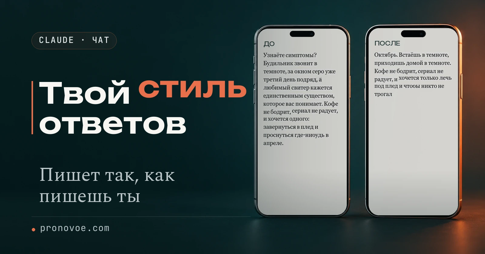
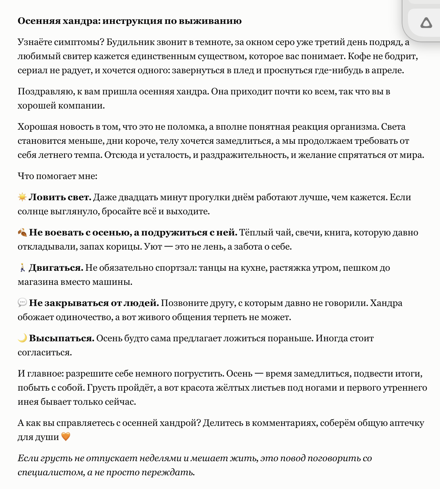
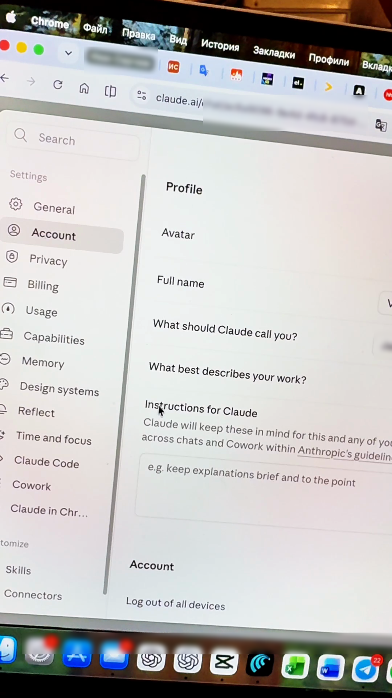
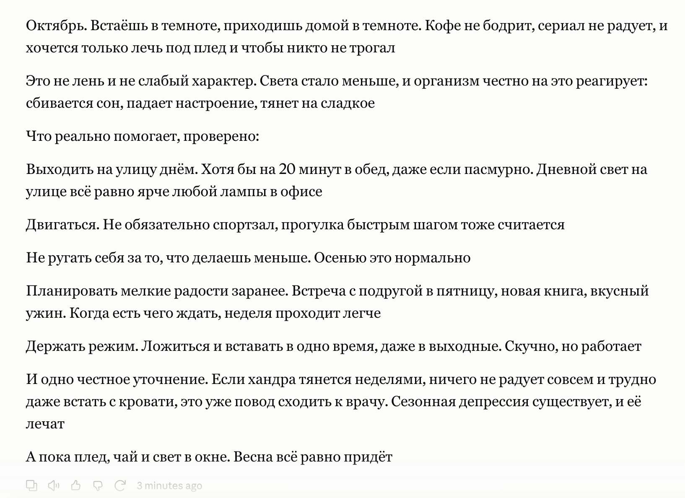

Содержание
Как научить Клода писать в твоём стиле1. Сохрани исходный ответ2. Выбери образец3. Сформулируй правила4. Открой Instructions for Claude5. Повтори запрос и сравниИсточникиClaude.ai · Серия 16

Как научить Клода писать в твоём стиле
Начальный уровень
Просишь Клода написать пост, а получаешь чужой текст: длинный, с заголовком, эмодзи и обращением на «вы». Переписываешь его руками, а в следующем чате всё повторяется. Кажется, что надо объяснять заново, но Клод просто не знает, как звучишь ты. За пять шагов покажешь ему образец, сохранишь правила в настройках, и тот же запрос вернётся ближе к твоей подаче.
Точка сравнения
1. Сохрани исходный ответ
Открой обычный чат Claude и отправь рабочий запрос. Сохрани сам запрос дословно и полученный ответ. В примере это пост про осеннюю хандру. В конце повторишь запрос без изменений, чтобы увидеть разницу
Напиши короткий пост про осеннюю хандру. Простым человеческим языком

Ориентир для подачи
2. Выбери образец
Возьми короткий текст с нужной интонацией: своё письмо, пост или отрывок книги. Он нужен как пример подачи. Если берёшь чужой текст, выдели особенности, которые хочешь повторить
Стиль складывается из обращения, слов, ритма и структуры. Краткость - только один из признаков. Выбери один небольшой образец, по которому эти особенности хорошо видны
Проверяемые правила
3. Сформулируй правила
В отдельном чате покажи образец и попроси Клода назвать конкретные особенности. Исправь неверные выводы, затем запиши только те правила, которые подходят для будущих разговоров
Ниже образец нужной мне подачи. Перечисли, что в нём характерно: длина абзацев, тон, лексика и структура. Отдельно назови, в чём не уверен. Пока не пиши новый текст Образец:
После слова «Образец» вставь выбранный текст и отправь сообщение. Сверь ответ Клода со своим образцом: например, действительно ли там обращение на «ты», короткие абзацы или шутки. Исправь догадки, с которыми не согласен
Скопируй следующий блок в заметку. Замени строку в квадратных скобках своим текстом, а в часть «Правила» добавь подтверждённые особенности из предыдущего шага. Удали правила, которые тебе не подходят. Получится один готовый блок для настройки
Образец нужной подачи: [Вставь сюда свой текст и удали эту строку] Правила: В ответах используй короткие абзацы и обычные слова. Убирай воду и канцелярит. Не начинай с «важно отметить» и не добавляй общий вывод ради объёма. Не придумывай факты. Если в запросе указан объём, соблюдай его Когда пишешь текст от моего имени, ориентируйся на тон, лексику и структуру образца. Не копируй его дословно и не переноси из него факты в новый текст
Если важна длина конкретного ответа, назови её и в самом запросе: например, «три коротких абзаца»
Реальный путь в интерфейсе
4. Открой Instructions for Claude
Нажми свои инициалы в левом нижнем углу. Открой Settings → Account → Instructions for Claude и вставь подготовленный блок. На показанном экране поле находится на странице Account
Эти инструкции Claude учитывает во всех чатах аккаунта. Оставь здесь то, что подходит постоянно. После ввода закрой настройки, снова открой это поле и убедись, что текст сохранился. Если интерфейс поменяется, ищи в Settings поле с тем же названием

Результат виден в ответе
5. Повтори запрос и сравни
Открой новый чат и отправь сохранённый запрос без изменений. Сверь ответ с конкретными правилами: обращение на «ты» или «вы», длина абзацев, характерные слова, заголовки и шутки. Проверь, сохранился ли смысл. Если какой-то признак не совпал, уточни одно правило в настройке и повтори запрос

Результат: ты видишь, какие правила Клод применил, и знаешь, что уточнить. Для своего текста сверяй свои признаки подачи
Официальная справка
Источники
Claude пишет твоим голосом. Сколько текстов он может выпустить?
Инструкция пройдена. А как сделать, чтобы нейросети приводили клиентов?
Концентрат - онлайн-мероприятие Ивана Сергеева по вайбмаркетингу: 13-15 октября, 19:00 по Москве. Участие бесплатное, регистрация на сайте до 14 октября
ЗарегистрироватьсяРеклама. ИП Сергеев И. С., ИНН 352511695540. erid: 2VtzqviiWtm